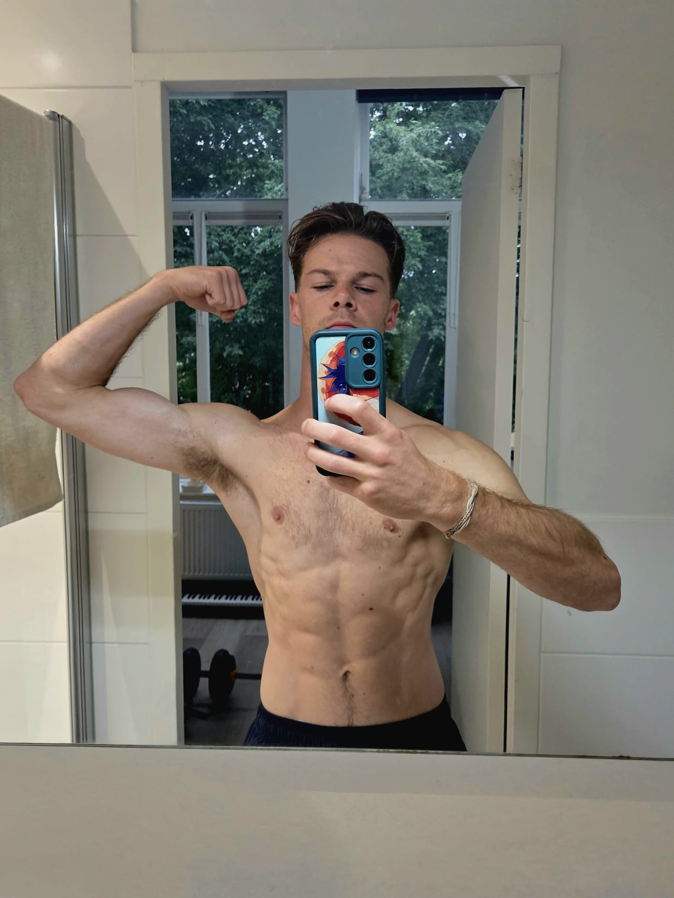

Personal Overview August 2025
August 27, 2025
🧙♂️🌳🔮
“Unlocking potential, forging strength, and building a life
rooted in purpose.”
👋 I’m Keyon van den Elzen (26) — right now I’m in the
middle of a radical transformation:
-
🌿 Substances → quit weed + cigarettes (2.5m), quit
caffeine (2.5w), going to taper off meds
-
🥩 Body → carnivore-keto, fasting, training
3–4x/week, rebuilding strength + balance
-
😴 Recovery → lock in circadian rhythm, blackout
nights, morning walks, vivid dreams returning
-
🧠 Mind → meditation, non-consumption, patience,
sovereignty over ego + crutches
-
💼 Work → leaving a misaligned job, KvK registration
(Sept 12), building under my own name
-
🎥 Creative → short-form videos (movement, music),
essays, documenting experiments
-
🎯 Goals → 70kg, Rotterdam Marathon (Apr 2026), 1000
days caffeine-free, 100% own path
👤 Stats & Identity
- 26 years old, based in the Netherlands.
-
Height: ±175 cm. Current weight: 62–64 kg.
Target: 70 kg (rebuilding muscle & mass).
-
Training at least 4x/week (strength, mobility,
dynamic movement: handstands, flips, calisthenics).
-
Running foundation in place; long-term goal:
Rotterdam Marathon (April 2026).
-
In the midst of a
radical, intentional transformation after years of
overstimulation, burnout, and misalignment.
-
Building a life rooted in
clarity, sovereignty, strength, and creative
expression.
🌿 Substances & Reset
- Quit weed & cigarettes: 2.5 months ago.
-
Quit caffeine: 2.5 weeks ago, after
14+ years of daily use — no more artificial
stimulation, facing raw energy directly.
-
Tapering plan: citalopram 20mg → 0mg, stepping into
life without chemical buffers.
-
Philosophy: stripping away crutches (weed, nicotine,
caffeine, meds) and attachments (ego, pride, desire).
🥩 Health & Body
-
Nutrition: Carnivore-based ketogenic diet (beef,
eggs, butter, salt, electrolytes) → 2 months in.
-
Training: Strength & movement 3–4x per week,
regaining muscle, coordination, and dynamic control
(backflips, handstands, explosive moves).
-
Endurance: Running & cycling, with marathon goal in
sight.
-
Fasting: Intermittent fasting, regular 24–48h fasts
for metabolic flexibility and deeper reset.
-
Sleep: semi-strict 22:00–06:30 window,
blackout curtains, evening wind-down, morning walks,
breathwork → circadian rhythm syncing, nervous system
healing, vivid dreams.
- Recovery: sauna/pool/gym integration planned.
🧠 Mind & Spirit
-
Monthly focus areas:
- August: Sleep, rest, recovery.
- September: Meditation practice.
-
October: Non-consumption (reducing noise, reclaiming
stillness).
-
Practices: Meditation, breathwork, deliberate
patience.
-
Philosophy: Undoing years of burnout through
subtraction. Moving toward sovereignty by stripping away
distractions and cultivating stillness.
💼 Work & Creative Freedom 🎨✨🎶
-
Current job: misaligned, reduced output/overperformance.
-
Transition goal: part-time (3 days/week) by Nov 2025.
-
KvK appointment — Sept 12, 2025: Official
entrepreneurial path under own name.
-
Vision: multiple creative income streams under
personal brand.
-
Areas of focus:
-
🎥 Content: YouTube, TikTok, Instagram,
experimental short-form.
-
🎶 Music: guitar, piano, freestyle
improvisation, rap/singing.
-
📝 Writing: essays on quitting substances,
modern living, sovereignty.
-
🎨 Creative experiments: design, movement,
social presence.
-
Current exposure: ~5k views on YT Shorts (fitness/movement
clips).
🔥 Goals & Challenges
-
Health & Performance
- Reach 70kg bodyweight by end of 2025.
-
Run the Rotterdam Marathon — April 12th 2026,
first marathon, goal: finish.
- Achieve 1000 days caffeine-free.
-
Creative & Work
-
Build consistent online presence, cross-pollinate
across platforms.
- Experiment until traction, then double down.
-
Embrace playfulness, having fun with it, but working
hard.
-
Personal
- Embody clarity, alignment, sovereignty.
-
Build new social & creative circles rooted in
authenticity and expression.
💡 Immediate Next Steps
- Install workspace in new home (Den Bosch).
-
Find high-end gym with pool/sauna for training &
recovery.
- Keep abstaining from substances with patience.
-
Push more energy into creative output (not just
stripping away).
- Continue experimenting with short-form video.
🎯 2026 → To be able to devote 100% of my time to building my
own thing.

#overview
@keyonvandenelzen